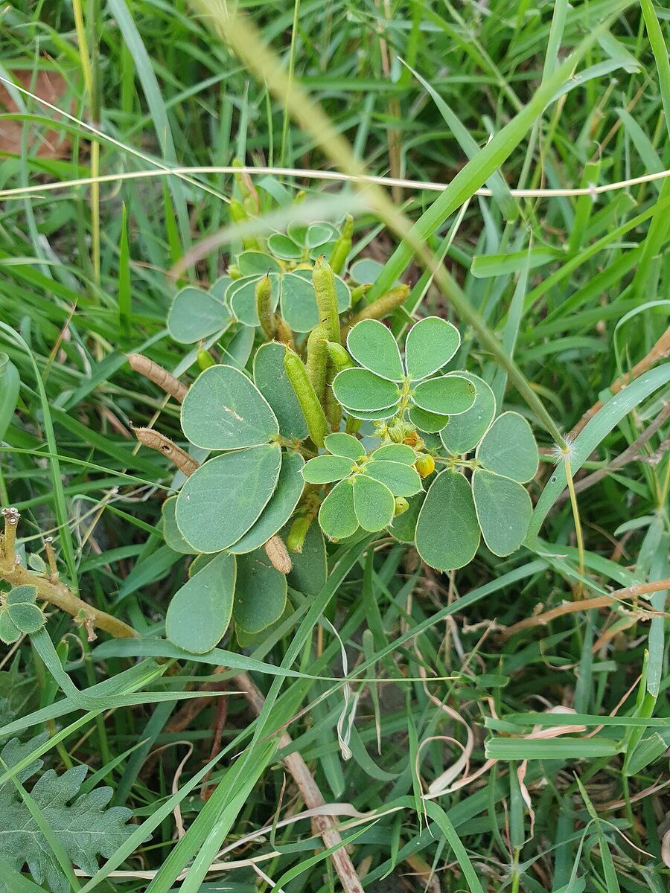

Plant Library › Chakramarda
Chakramarda
Senna tora (L.) Roxb.
NCISM 97 · No. 47
A characteristic Senna herb with paripinnate leaves, paired leaflets and yellow flowers; mature pods and seed characters are useful for confirmation.

Verified study data
- Sanskrit name
- चक्रमर्द
- Botanical name
- Senna tora (L.) Roxb.
- Family
- Fabaceae
- English name
- Ringworm Plant
- Habit
- Annual herb or small branched herb
- Description
- A characteristic Senna herb with paripinnate leaves, paired leaflets and yellow flowers; mature pods and seed characters are useful for confirmation.
- Rasa
- Katu
- Guna
- Laghu
- Virya
- Ushna
- Vipaka
- Katu
- Useful part
- seed/whole plant
- Indications
- Dadru, Kandu, Pama, Kushta, Shwasa
- Dose
- Seed churna 1–3 g (API)
- Anupana
- Not available in verified record
- Precautions
- Do not infer purgative dosing without a qualified physician. Authenticate the plant and consult an authoritative monograph before therapeutic use.
- Contraindications
- Not specified here because patient-specific and dose-specific prescribing information requires authoritative source verification.
- Therapeutic actions
- Traditional Ayurvedic use includes skin-related indications and rechana context; exact application should follow authoritative texts/formularies
- Quick revision
- Chakramarda (Senna tora, Fabaceae) is a branched herb with paripinnate leaves, yellow flowers and slender pods; the project record emphasizes traditional skin-disorder and rechana contexts.
- Shloka / classical text
- Not available in verified record
- Nighantu references
- Not available in verified record
- Samhita references
- Not available in verified record
Important formulations
- Nimbadi Churna — Kushta, Vatarakta
- Kasisadi Ghrita — Kushta, Dadru, Vrana
- Maha Vishagarbha Taila — Vatavyadhi, Pakshaghata
- Brihanmarichadya Taila — Kushta, Dadru, Kandu
Academic trust & review
This page is a static, crawlable rendering of the DravyaGuna 97 database record. It does not invent missing fields.
Reviewer attribution is shown only when a named reviewer is actually recorded in the project data. See the Sources & Review page for the verification framework and source policy.
Continue to full dossier
The interactive dossier contains the full image gallery, detailed textbook notes, MCQs and revision tools.